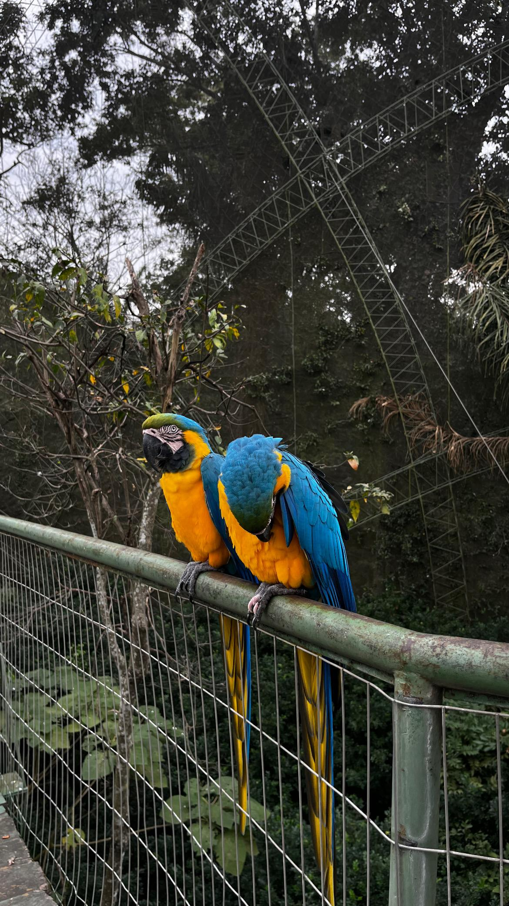
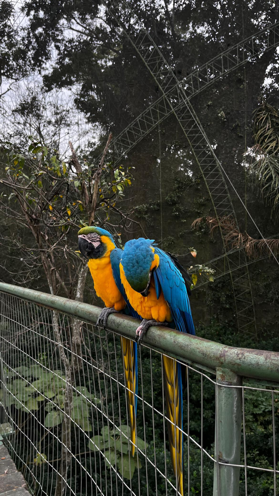

Presentación
Hola, soy Lautaro Corimayo, tengo 18 años y nací el 5 de diciembre de 2006 en la ciudad de Salta. Vivo en Barrio La Loma junto a mi madre y actualmente estudio en la Escuela Técnica N.º 3139 “General Martín Miguel de Güemes”, con la meta de convertirme en arquitecto cuando termine la secundaria.


 
